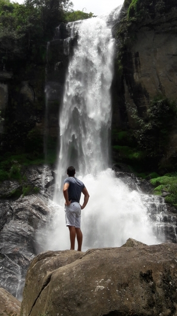

Island highlights01
Island highlights0110-Day Sri Lanka Highlights Tour
Experience the best of Sri Lanka in 10 days, combining ancient heritage, Sigiriya, Kandy, misty tea hills, Ella, wildlife safaris, and southern beaches.
View full itinerary
Experience seamless, stress-free private journeys through ancient wonders, misty tea hills, and golden beaches tailored entirely around your pace.


YOUR ISLAND. OUR LOCAL KNOWLEDGE.For over a decade, Loving Lanka Tours has specialized in crafting unforgettable, stress-free journeys across the island. Led by expert English-speaking chauffeur guides who double as your local storytellers, we eliminate the complexities of foreign travel. From fully insured, air-conditioned private vehicles to handpicked accommodations and custom-designed itineraries, we handle every logistical detail so you can experience the true warmth, culture, and beauty of Sri Lanka safely and comfortably.
Nadeeka
FOUNDER · PRIVATE CHAUFFEUR GUIDEDiscover Our Story & TeamFrom island highlights and cultural discoveries to an intimate honeymoon, explore a journey designed around you.
Island highlights01Experience the best of Sri Lanka in 10 days, combining ancient heritage, Sigiriya, Kandy, misty tea hills, Ella, wildlife safaris, and southern beaches.
 Culture & nature02
Culture & nature02Explore deeper into the island's culture and nature with an extended private journey through historic capitals, tea estates, and coastal gems.
 At a relaxed pace03
At a relaxed pace03Discover the wonders of ancient Anuradhapura, Polonnaruwa, Sigiriya, hill-country landscapes, wildlife reserves, and tropical shores at a relaxed pace.
 Grand island discovery04
Grand island discovery04The ultimate island discovery covering ancient kingdoms, Trincomalee's east coast beaches, Pasikuda, Kandy, Nuwara Eliya, Ella, and the entire southern coastline.
 Ancient heritage05
Ancient heritage05Discover the ancient heart of Sri Lanka from Kandy, featuring Anuradhapura, Polonnaruwa, Sigiriya Rock Fortress, Dambulla Cave Temple, and an elephant safari.
Coast & adventure06Experience the tropical east coast, Trincomalee, Nilaveli, Pasikuda, Arugam Bay surfing, Kumana wildlife safari, and hill-country tea estates.
 Romantic escape07
Romantic escape07A romantic balance of culture, misty mountains, scenic train views, luxury stays, and beach relaxation designed for couples.
No rigid large-group coaches. Travel at your own pace with the absolute freedom to modify daily stops.
Licensed, highly knowledgeable professionals who ensure your safety, comfort, and deep cultural insight throughout the journey.
Comprehensive packages covering private air-conditioned transport, fuel, highway charges, and parking with zero surprise costs.
Personally vetted accommodations matched to your comfort style alongside round-the-clock on-ground assistance.
From traditional village cooking demonstrations to tea factory tastings and custom wildlife safaris, experience the true heart of Sri Lanka.
What our guests say about travelling with Loving Lanka Tours.
Booking our family holiday with Loving Lanka Tours was the best decision we made. Our driver guide took care of every single detail, from airport pickup to seamless hotel check-ins, keeping us safe and comfortable throughout.
An absolute 5-star experience! The customized 10-day itinerary let us experience the wild elephants in Udawalawe and the beauty of Ella without a single logistical stress. Highly recommended!
Our honeymoon was magical. From the romantic room touches to the private vehicle comfort, Loving Lanka Tours made our dream trip effortless and unforgettable.
Climbing the ancient royal citadel amidst tropical green forests.
Experiencing the spiritual heart of Kandy’s historic royal palace complex.
Walking through lush green hills where world-famous Ceylon tea is grown.
Capturing the historic architectural railway masterpiece hidden in the green hills of Ella.
Spotting wild elephants roaming freely during a jeep safari in Yala or Udawalawe National Park.
Enjoying golden sand beaches and peaceful Indian Ocean sunsets along the southern coast.
Exploring colonial-era streets, old stone walls, and ocean views within the UNESCO-listed Galle Fort.
Discovering centuries-old Buddhist statues and vibrant ceiling murals inside the sacred caves.
Relaxing on the crystal-clear, calm shores of Nilaveli Beach on Sri Lanka's tropical east coast.
Marveling at magnificent granite-carved Buddha statues in the ancient kingdom of Polonnaruwa.
Enjoying authentic local spices and freshly prepared rice and curry with local village hosts.
Stopping by cascading mountain waterfalls like Ramboda along scenic private transfer routes.
Share your travel dates, group size, and preferences with us, and let our experts build a tailor-made private tour package just for you.